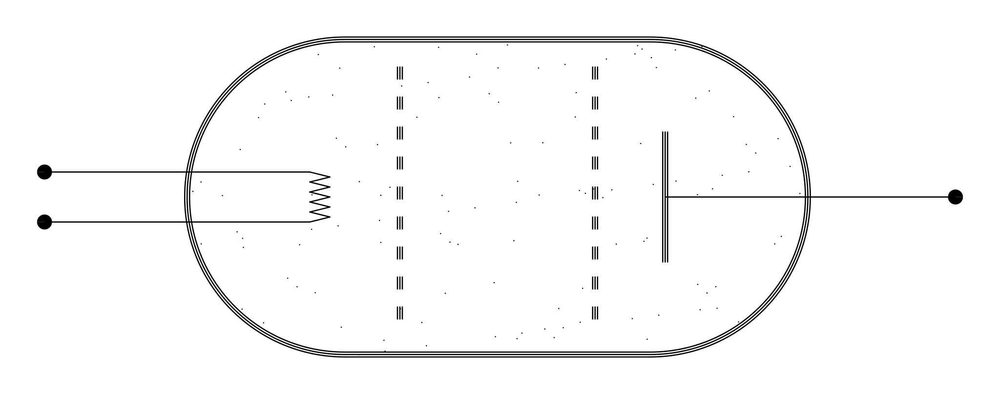
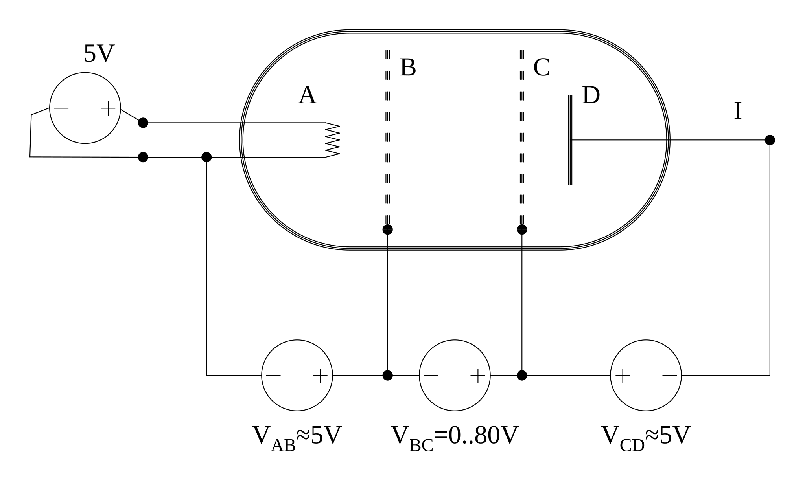
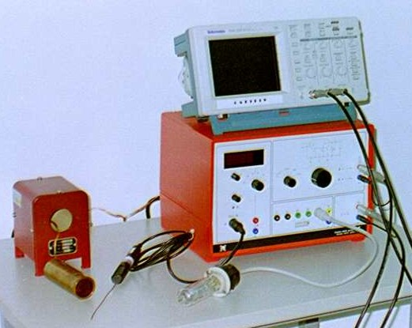
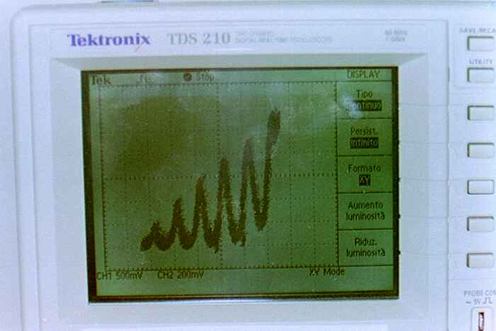
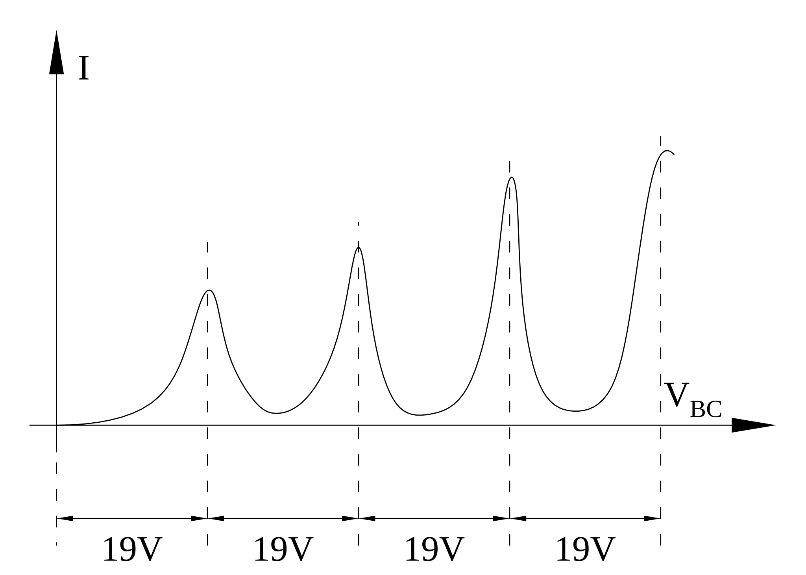
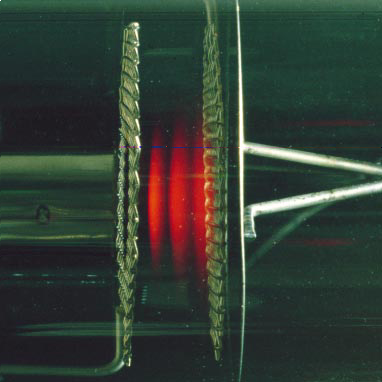
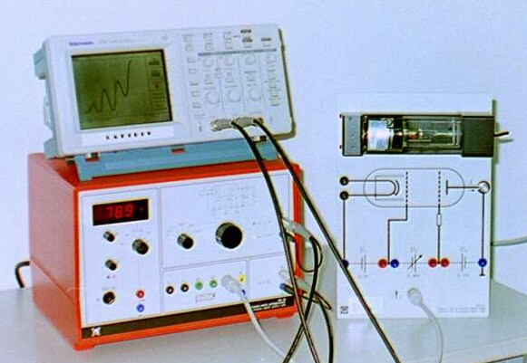
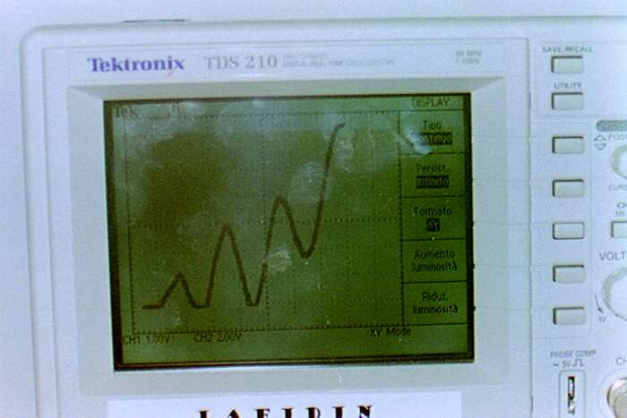
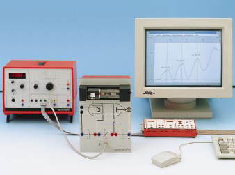
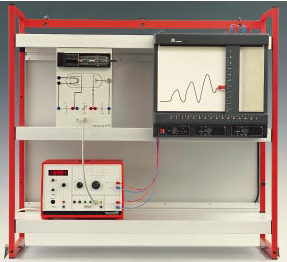

Capitolo 7Chapter 7
Esperimento di Franck-HertzThe Franck–Hertz Experiment
In questa scheda descriveremo l’esperimento di Franck-Hertz. Questo costituisce l’esperienza più semplice con la quale si mette in evidenza la quantizzazione dell’energia degli atomi.In this card we describe the Franck–Hertz experiment. It is the simplest experience by which the quantisation of the energy of atoms is revealed.
Per far comprendere l’importanza di questo esperimento diciamo che la Meccanica Quantistica si chiama così perché molte grandezze fisiche, come l’energia degli atomi, possono assumere solo valori quantizzati.To convey the importance of this experiment, let us say that Quantum Mechanics is so named because many physical quantities, such as the energy of atoms, can take only quantised values.
Descrizione dell’esperimento.Description of the experiment.
In un’ampolla di vetro è contenuto un gas costituito dal particolare tipo di atomo che si vuole analizzare; nell’ampolla sono disposti anche degli elettrodi come mostra la figura 1.A glass bulb contains a gas made of the particular type of atom to be analysed; inside the bulb there are also electrodes, as shown in figure 1.

Gli elettrodi vengono alimentati come mostra la figura 2.The electrodes are powered as shown in figure 2.

Il filamento A si riscalda per effetto Joule ed emette degli elettroni; questi vengono convogliati verso la griglia B dalla tensione VAB di circa 5 V. Tra le due griglie B e C gli elettroni vengono accelerati dalla tensione VBC che può essere variata tra 0 V e 80 V. All’uscita della griglia C, gli elettroni che hanno un’energia sufficiente superano la tensione negativa VCD di circa 5 V e arrivano all’elettrodo D formando una corrente negativa I che viene misurata.Filament A heats up by the Joule effect and emits electrons; these are directed towards grid B by the voltage VAB of about 5 V. Between the two grids B and C the electrons are accelerated by the voltage VBC, which can be varied between 0 V and 80 V. On leaving grid C, the electrons that have sufficient energy overcome the negative voltage VCD of about 5 V and reach electrode D, forming a negative current I that is measured.
Lo scopo dell’esperimento è di riportare la corrente I in funzione della tensione VBC applicata tra le griglie.The aim of the experiment is to plot the current I as a function of the voltage VBC applied between the grids.
Nel laboratorio didattico LAFIDIN abbiamo la possibilità di eseguire l’esperienza di Franck-Hertz per gli atomi di neon e per gli atomi di mercurio. Descriviamo prima l’apparato per il neon.In the LAFIDIN teaching laboratory we can carry out the Franck–Hertz experience for neon atoms and for mercury atoms. Let us first describe the apparatus for neon.
Descrizione dell’apparato sperimentale per il neon.Description of the experimental apparatus for neon.
La foto di figura 3 mostra l’ampolla di vetro contenente il neon; la figura 4 mostra l’intero apparato sperimentale.The photograph in figure 3 shows the glass bulb containing the neon; figure 4 shows the entire experimental apparatus.


A destra in figura 4 abbiamo il supporto per l’ampolla; a sinistra sotto abbiamo un sistema integrato che è collegato, con un unico cavo multipolo, al supporto dell’ampolla. Mediante quest’unico cavo lo strumento fornisce le tensioni per gli elettrodi e per le griglie, ed inoltre misura la corrente I. Da questo strumento integrato partono due uscite che vanno all’oscilloscopio appoggiato sopra. Un’uscita porta la tensione VAB applicata tra le griglie, che viene riportata sull’asse X dell’oscilloscopio, mentre l’altra uscita porta una tensione proporzionale alla corrente I, che viene riportata sull’asse Y dell’oscilloscopio. In questo modo, facendo variare lentamente la tensione tra 0 ed 80 V, sullo schermo comparirà il diagramma tensione/corrente VAB/I. La figura 5 mostra una foto dello schermo dell’oscilloscopio.On the right in figure 4 is the support for the bulb; below on the left is an integrated system connected to the bulb support by a single multipole cable. Through this single cable the instrument supplies the voltages for the electrodes and the grids, and also measures the current I. From this integrated instrument two outputs go to the oscilloscope resting on top. One output carries the voltage VAB applied between the grids, which is plotted on the X axis of the oscilloscope, while the other output carries a voltage proportional to the current I, plotted on the Y axis of the oscilloscope. In this way, by slowly varying the voltage between 0 and 80 V, the voltage/current diagram VAB/I appears on the screen. Figure 5 shows a photograph of the oscilloscope screen.

Risultati sperimentali ed interpretazione.Experimental results and interpretation.
Da un punto di vista classico ci aspettiamo che la corrente debba crescere in modo monotòno al crescere della tensione. Invece sperimentalmente vediamo che in alcuni tratti, mentre la tensione aumenta, la corrente diminuisce, generando un grafico con una serie di massimi e di minimi (Fig. 6).From a classical point of view we expect the current to grow monotonically as the voltage increases. Experimentally, however, we see that over some intervals the current decreases while the voltage rises, producing a graph with a series of maxima and minima (Fig. 6).

Inoltre si osserva che la distanza tra i massimi è più o meno costante e pari a circa 19 V.Moreover, the distance between the maxima is more or less constant and equal to about 19 V.
Questi risultati si possono interpretare nel seguente modo:These results can be interpreted as follows:
Gli atomi di neon hanno il primo livello energetico corrispondente a 19 eV, cioè all’energia che acquista un elettrone quando cade in una differenza di potenziale di 19 V.Neon atoms have their first energy level corresponding to 19 eV, that is, the energy an electron acquires when it falls through a potential difference of 19 V.
Quando la tensione tra le griglie è minore dei primi 19 V gli elettroni attraversano le griglie senza poter mai cedere nemmeno un po’ di energia agli atomi, perché la loro energia è minore di 19 eV e gli atomi di neon possono prendere solo un’energia “discreta” di 19 eV.When the voltage between the grids is less than the first 19 V, the electrons cross the grids without ever being able to give even a little energy to the atoms, because their energy is less than 19 eV and neon atoms can take only a “discrete” energy of 19 eV.
Quando la tensione raggiunge i 19 V alcuni elettroni alla fine del loro cammino, cioè vicino alla seconda griglia, raggiungono l’energia di 19 eV che può essere ceduta agli atomi di neon: questi elettroni cedono la loro energia e rimangono bloccati privi della velocità necessaria ad attraversare la tensione negativa VCD tra la seconda griglia C e l’elettrodo D. Se ne deduce che intorno ai 19 V avremo una diminuzione della corrente I.When the voltage reaches 19 V, some electrons — at the end of their path, that is near the second grid — reach the energy of 19 eV that can be given to the neon atoms: these electrons give up their energy and remain stuck, lacking the speed needed to cross the negative voltage VCD between the second grid C and electrode D. It follows that around 19 V we have a decrease in the current I.
Quando la tensione diviene maggiore di 19 V ma minore di 38 V, gli elettroni raggiungono un’energia di 19 eV in un punto intermedio tra le griglie; qui cedono quest’energia e vengono bloccati. Tuttavia hanno ancora un po’ di strada da percorrere tra le griglie ed in questa strada possono essere riaccelerati in modo da poter raggiungere l’elettrodo D e contribuire al flusso di corrente. Quindi la corrente ricomincia a crescere.When the voltage becomes greater than 19 V but less than 38 V, the electrons reach an energy of 19 eV at an intermediate point between the grids; here they give up this energy and are stopped. However, they still have some way to travel between the grids, and along this path they can be re-accelerated so as to reach electrode D and contribute to the current flow. The current therefore starts to grow again.
Quando la tensione VBC è di 38 V gli elettroni vengono prima accelerati; a metà percorso raggiungono l’energia di 19 eV e vengono bloccati, poi accelerano di nuovo fino a quando, vicino alla seconda griglia, raggiungono nuovamente l’energia di 19 eV e vengono bloccati. Quindi intorno ai 38 V abbiamo una diminuzione della corrente.When the voltage VBC is 38 V, the electrons are first accelerated; halfway along they reach the energy of 19 eV and are stopped, then they accelerate again until, near the second grid, they again reach the energy of 19 eV and are stopped. So around 38 V we have a decrease in the current.
Aumentando la tensione abbiamo ancora un aumento, fino a 57 V dove vediamo una diminuzione e poi di nuovo un aumento; a 75 V si inizia a vedere un’ultima diminuzione. L’esperimento viene fermato quando la tensione VBC raggiunge gli 80 V.As the voltage increases we have a further rise, up to 57 V where we see a decrease and then a rise again; at 75 V a last decrease begins to appear. The experiment is stopped when the voltage VBC reaches 80 V.
La figura 7 mostra ingrandito quello che si vede guardando tra le due griglie quando la tensione è di 70 V. Si possono osservare tre zone luminose rosse corrispondenti ai luoghi in cui gli elettroni cedono l’energia agli atomi.Figure 7 shows, enlarged, what is seen looking between the two grids when the voltage is 70 V. Three red luminous zones can be observed, corresponding to the places where the electrons give up their energy to the atoms.

Quando la tensione è minore di 19 V non si vedono zone luminose. A 19 V compare una prima “banda” vicino alla seconda griglia; quando si alza la tensione, questa zona si sposta a sinistra verso il centro. A 38 V la prima banda si troverà a metà percorso tra le due griglie, e si inizierà a vedere una seconda banda vicino alla griglia di arrivo. Alzando ancora la tensione queste due zone si sposteranno a sinistra ed a 57 V si vedrà la terza zona nascere vicino alla seconda griglia. A 70 V si vede l’immagine che abbiamo riportato, ed a 80 V si vedrà una quarta zona non ancora sviluppata vicino alla griglia.When the voltage is less than 19 V no luminous zones are seen. At 19 V a first “band” appears near the second grid; when the voltage is raised, this zone moves to the left towards the centre. At 38 V the first band is halfway between the two grids, and a second band begins to appear near the arrival grid. Raising the voltage further, these two zones move to the left, and at 57 V the third zone appears near the second grid. At 70 V we see the image shown above, and at 80 V a fourth, not-yet-developed zone appears near the grid.
Queste zone luminescenti sono dovute al fatto che, quando gli atomi assorbono una certa quantità di energia, non la mantengono a lungo e dopo pochissimo tempo la restituiscono sotto forma di onde elettromagnetiche, cioè di luce. Ci occuperemo di questo fenomeno di emissione approfonditamente nella decima scheda.These luminescent zones are due to the fact that, when the atoms absorb a certain amount of energy, they do not keep it for long and, after a very short time, give it back in the form of electromagnetic waves, that is, light. We will deal with this emission phenomenon in detail in the tenth card.
Descrizione dell’apparato sperimentale per il mercurio.Description of the experimental apparatus for mercury.
Le foto nelle figure 8 e 9 mostrano l’apparato sperimentale per il mercurio.The photographs in figures 8 and 9 show the experimental apparatus for mercury.


L’ampolla contiene mercurio allo stato liquido, quindi per ottenere un gas si deve riscaldare a circa 160 °C. Per riscaldare abbiamo un fornetto elettrico rappresentato a sinistra nelle figure 8 e 9. Per mantenere la temperatura costante c’è un sistema di regolazione contenuto nel sistema integrato raffigurato a destra; questo sistema misura la temperatura mediante una termocoppia raffigurata vicino al fornetto nella figura 8. Inoltre il sistema integrato fornisce le tensioni per alimentare gli elettrodi dell’ampolla, e misura la corrente I dovuta al transito degli elettroni.The bulb contains mercury in the liquid state, so to obtain a gas it must be heated to about 160 °C. For heating we have an electric furnace shown on the left in figures 8 and 9. To keep the temperature constant there is a regulation system contained in the integrated unit shown on the right; this system measures the temperature by means of a thermocouple shown near the furnace in figure 8. In addition, the integrated unit supplies the voltages to power the bulb’s electrodes and measures the current I due to the transit of the electrons.
La tensione tra le griglie e la corrente vengono riportate rispettivamente sugli assi X ed Y dell’oscilloscopio. Variando la tensione di accelerazione tra 0 e 30 V si ottiene il grafico tensione/corrente riportato in figura 10. Si osservano sei massimi con una distanza di circa 6 V.The voltage between the grids and the current are plotted on the X and Y axes of the oscilloscope, respectively. By varying the accelerating voltage between 0 and 30 V, the voltage/current graph shown in figure 10 is obtained. Six maxima are observed, about 6 V apart.


